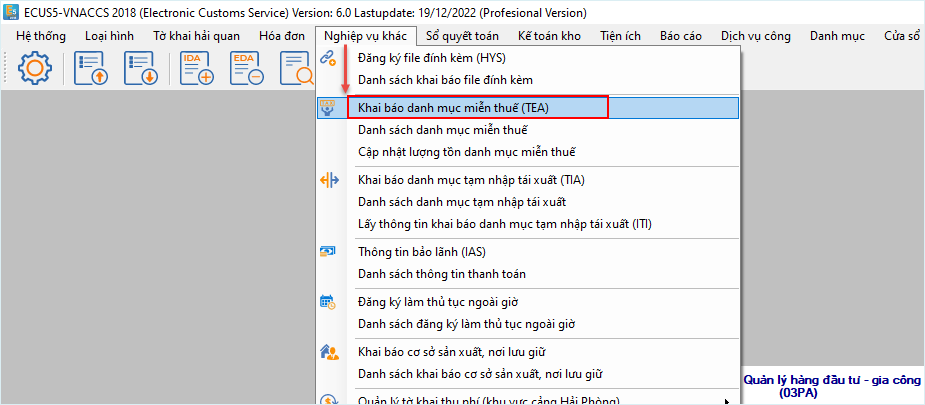
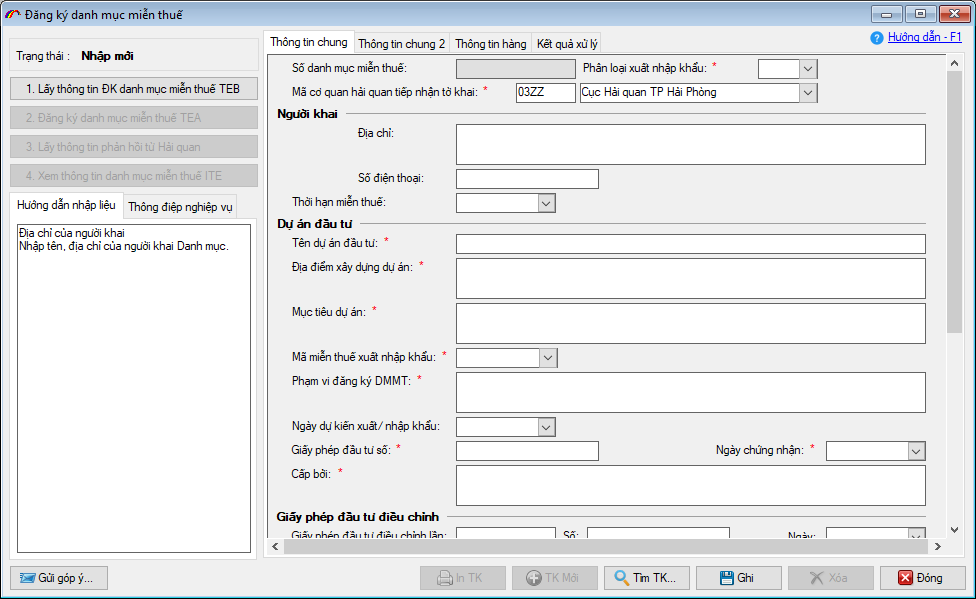
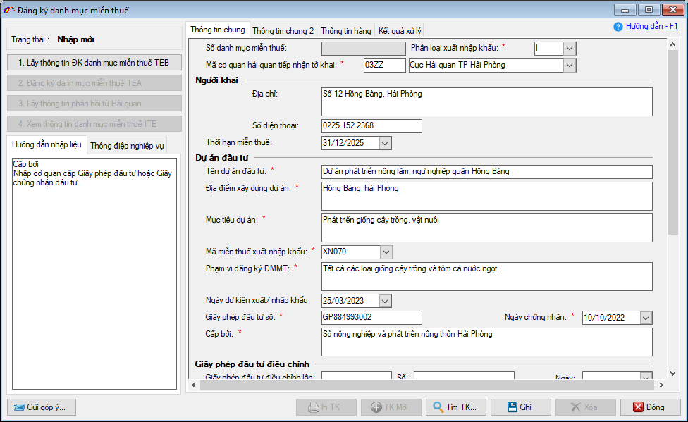
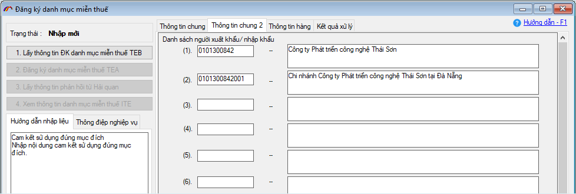
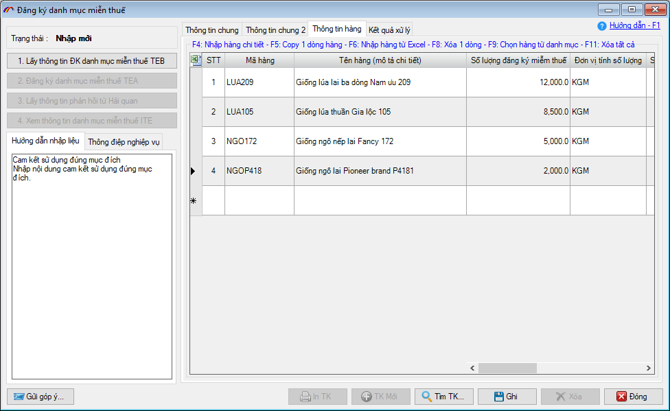
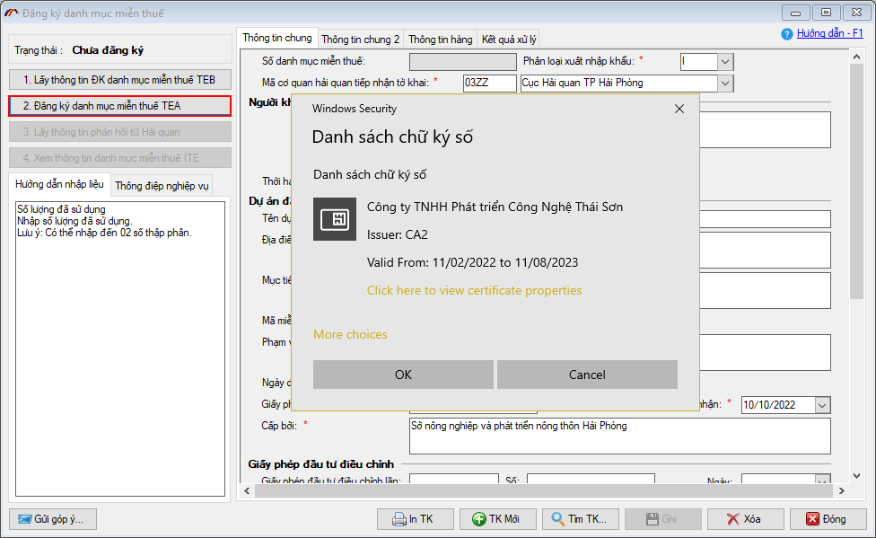
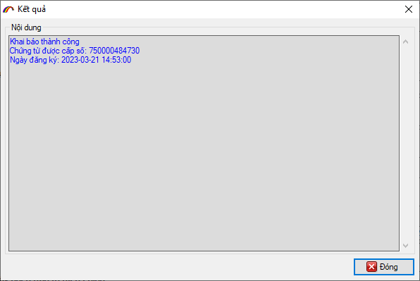
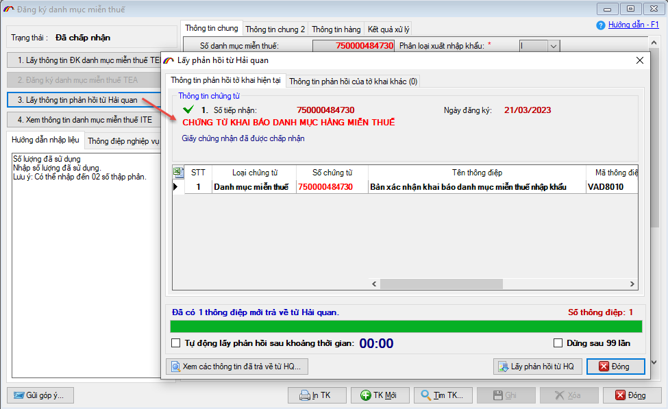
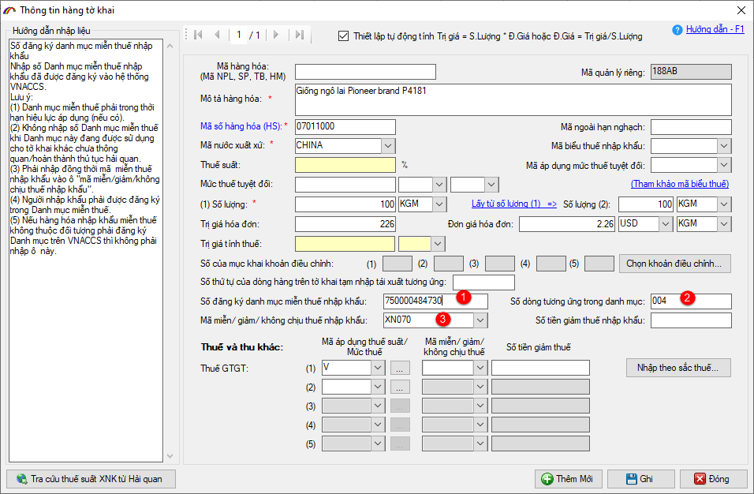

KHAI BÁO DANH MỤC HÀNG MIỄN THUẾ - TEA
Để biết thêm chi tiết, doanh nghiệp tham khảo phần hướng dẫn phía dưới hoặc xem video hướng dẫn tại địa chỉ sau:
- Hướng dẫn khai báo danh mục hàng hóa miễn thuế:
Xem video - Trọn bộ video tham khảo khai báo VNACCS:
Xem videoHoặc tham khảo hướng dẫn chi tiết ở phần dưới đây:
1. Căn cứ pháp lý.
Theo quy định, các trường hợp phải khai báo danh mục hàng hóa nhập khẩu, xuất khẩu miễn thuế là hàng hoá nêu tại:
Điều 14, 15, 16, 17, 18, 23 và 24 của Nghị định 134/2016/NĐ-CP hướng dẫn Luật thuế xuất khẩu, thuế nhập khẩu.
Khoản 7, 8, 9, 10, 11, 12, 13, 14, 15, 16 và khoản 18, khoản 21 Điều 103 Thông tư số 38/2015/TT-BTC.
Trích dẫn Khoản 7, 8 và 10, Điều 103 Thông tư 38/2015/TT-BTC:
"Hàng hóa nhập khẩu để tạo tài sản cố định của dự án đầu tư vào lĩnh vực được ưu đãi về thuế nhập khẩu quy định tại Phụ lục I ban hành kèm theo Nghị định số 87/2010/NĐ-CP hoặc địa bàn được ưu đãi về thuế nhập khẩu theo quy định của pháp luật có liên quan quy định tại Phụ lục Danh mục địa bàn ưu đãi thuế thu nhập doanh nghiệp ban hành kèm theo Nghị định số 218/2013/NĐ-CP ngày 26/12/2013 của Chính phủ"
"Giống cây trồng, vật nuôi được phép nhập khẩu để thực hiện dự án đầu tư trong lĩnh vực nông nghiệp, lâm nghiệp, ngư nghiệp"
"Miễn thuế lần đầu đối với hàng hóa là trang thiết bị nhập khẩu theo danh mục quy định tại Phụ lục II ban hành kèm theo Nghị định số 87/2010/NĐ-CP để tạo tài sản cố định của dự án được ưu đãi về thuế nhập khẩu, dự án đầu tư bằng nguồn vốn hỗ trợ phát triển chính thức (ODA) đầu tư về khách sạn, văn phòng, căn hộ cho thuê, nhà ở, trung tâm thương mại, dịch vụ kỹ thuật, siêu thị, sân golf, khu du lịch, khu thể thao, khu vui chơi giải trí, cơ sở khám, chữa bệnh, đào tạo, văn hoá, tài chính, ngân hàng, bảo hiểm, kiểm toán, dịch vụ tư vấn. "
2. Đối tượng khai báo.
Người đăng ký Danh mục hàng hoá xuất khẩu, nhập khẩu miễn thuế là: tổ chức, cá nhân sử dụng hàng hóa (chủ dự án, chủ cơ sở đóng tàu,…). Trường hợp chủ dự án không trực tiếp nhập khẩu hàng hoá miễn thuế mà nhà thầu chính hoặc nhà thầu phụ hoặc Công ty cho thuê tài chính nhập khẩu hàng hóa thì nhà thầu, Công ty cho thuê tài chính sử dụng danh mục miễn thuế do chủ dự án đã đăng ký với cơ quan hải quan.
3. Nơi đăng ký danh mục miễn thuế (nơi tiếp nhận).
Doanh nghiệp đăng ký danh mục hàng hóa xuất khẩu, nhập khẩu miễn thuế tại Cục Hải quan nơi thực hiện dự án đầu tư (đối với dự án xác định được Cục Hải quan nơi thực hiện dự án đầu tư).
Hoặc Cục Hải quan nơi đóng trụ sở chính đối với dự án không xác định được Cục Hải quan nơi thực hiện dự án đầu tư hoặc Cục Hải quan gần nhất đối với tỉnh, thành phố không có cơ quan hải quan.
4. Hướng dẫn khai báo trên ECUS5VNACCS.
Để khai báo danh mục hàng hóa miễn thuế trên phần mềm ECUS5VNACCS, doanh nghiệp truy cập vào menu Nghiệp vụ khác / Khai báo danh mục miễn thuế (TEA):

Màn hình chức năng khai báo danh mục miễn thuế hiện ra như sau:

Doanh nghiệp tiến hành nhập thông tin cho bản khai danh mục miễn thuế, có thể tham khảo chi tiết hướng dẫn nhập liệu của phần mềm hoặc tại hướng dẫn nhập liệu các chỉ tiêu thông tin Mẫu số 31, Phụ lục I, Thông tư 39/2018/TT-BTC.
Một số chỉ tiêu thông tin cần lưu ý khi nhập liệu
Mã cơ quan hải quan tiếp nhận: Bạn nhập vào là mã Cục hải quan tiếp nhận hồ sơ (xác định theo mục 3 ở trên). Ví dụ, cục hải quan Hải phòng thì chọn mã là 03ZZ.
Thời hạn miễn thuế: Nhập thời hạn miễn thuế được quy định (nếu có). Thời hạn không được trước ngày khai danh mục, trong trường hợp không có thông tin về thời hạn miễn thuế, hệ thống mặc định xuất ra thời hạn miễn thuế là '99/99/9999".
Mã miễn thuế xuất nhập khẩu: Chọn Mã miễn/giảm/không chịu thuế xuất khẩu, thuế nhập khẩu trong danh sách tương ứng với dự án đang khai báo. Ví dụ, đối với giống cây trồng, vật nuôi cho dự án nông lâm, ngư nghiệp thì bạn chọn mã là XN070
Thông tin giấy phép đầu tư: Nhập vào thông tin về giấy phép hoặc chứng nhận đầu tư, nếu có các bản sửa đổi, điều chỉnh thì bạn cũng nhập vào tại mục Giấy phép đầu tư điều chỉnh (tối đa 5 lần điều chỉnh).

Danh sách người nhập khẩu, xuất khẩu (tab Thông tin chung 2): Nếu đơn vị khai báo danh mục miễn thuế không trực tiếp nhập/xuất khẩu, hoặc có thêm các đơn vị khác nhập/xuất khẩu danh mục miễn thuế này thì bạn cần nhập danh sách các đơn vị này vào danh sách. Có như vậy, các đơn vị này mới được phép khai báo nhập/xuất khẩu hàng hóa của danh mục miễn thuế bạn đang đăng ký (nhập được tối đa 15 doanh nghiệp).

Danh sách hàng miễn thuế: Tại tab Thông tin hàng, bạn nhập vào thông tin danh sách hàng hóa miễn thuế dự kiến nhập/xuất khẩu.
Lưu ý: Danh sách hàng hóa miễn thuế khai báo được tối đa 100 dòng hàng.

Sau khi nhập và ghi thông tin, doanh nghiệp tiến hành khai báo danh mục miễn thuế lên cơ quan Hải quan bằng cách nhấn vào nút Đăng ký danh mục miễn thuế TEA (lưu ý, lúc này thiết bị chữ ký số đã được cắm vào máy tính khai báo):

Khai báo thành công phần mềm sẽ thông báo như sau:

Nộp chứng từ, hồ sơ khác
Sau khi khai báo thành công danh mục miễn thuế, doanh nghiệp mang kèm bộ hồ sơ bao gồm các chứng từ sau, để nộp cho cục Hải quan kiểm tra, phê duyệt:
- Công văn thông báo Danh mục hàng hóa miễn thuế nêu rõ cơ sở xác định hàng hóa miễn thuế (Mẫu số 05 thuộc Phụ lục VII ban hành kèm theo Nghị định 18/2021/NĐ-CP );
- Giấy chứng nhận đăng ký đầu tư, Giấy chứng nhận đăng ký doanh nghiệp hoặc giấy tờ có giá trị tương đương, trừ trường hợp hàng hóa nhập khẩu để phục vụ hoạt động dầu khí được miễn thuế theo quy định tại Khoản 15, Điều 16 của Luật Thuế xuất khẩu, thuế nhập khẩu năm 2016;
- Bản trích lục luận chứng kinh tế kỹ thuật; hoặc, Tài liệu kỹ thuật; hoặc, Bản thuyết minh dự án;
- Giấy chứng nhận Doanh nghiệp công nghệ cao, Doanh nghiệp khoa học và công nghệ, Tổ chức khoa học và công nghệ của cơ quan có thẩm quyền, đối với các trường hợp là doanh nghiệp công nghệ cao, doanh nghiệp khoa học và công nghệ, tổ chức khoa học và công nghệ;
- Giấy chứng nhận đủ điều kiện sản xuất trang thiết bị y tế hoặc giấy tờ có giá trị tương đương theo quy định của pháp luật về quản lý trang thiết bị y tế đối với trường hợp được miễn thuế theo quy định tại Khoản 14, Điều 16 của Luật Thuế xuất khẩu, thuế nhập khẩu năm 2016;
- Hợp đồng dầu khí, quyết định giao nhiệm vụ thực hiện hoạt động dầu khí, văn bản của cơ quan có thẩm quyền phê duyệt chương trình công tác năm và ngân sách hàng năm đối với trường hợp miễn thuế theo quy định tại Khoản 15, Điều 16 của Luật Thuế xuất khẩu, thuế nhập khẩu năm 2016;
- Hợp đồng đóng tàu, hợp đồng xuất khẩu tàu biển đối với trường hợp miễn thuế theo quy định tại Điểm b và Điểm c, Khoản 16, Điều 16 của Luật Thuế xuất khẩu, thuế nhập khẩu năm 2016;
- Bản thuyết minh dự án sản xuất sản phẩm công nghệ thông tin, nội dung số, phần mềm đối với trường hợp miễn thuế theo quy định tại Khoản 18, Điều 16 của Luật Thuế xuất khẩu, thuế nhập khẩu năm 2016;
- Hợp đồng bán hàng hoặc hợp đồng cung cấp hàng hóa theo kết quả thầu, hợp đồng ủy thác xuất khẩu, ủy thác nhập khẩu hàng hóa, hợp đồng cho thuê tài chính, trong trường hợp người nhập khẩu không phải là người thông báo Danh mục miễn thuế.
Lấy kết quả chấp nhận do hải quan trả về
Để lấy kết quả chấp nhận duyệt do hải quan trả về, doanh nghiệp nhấn vào nút Lấy thông tin phản hồi từ hải quan:

5. Sử dụng danh mục miễn thuế trên tờ khai nhập/ xuất khẩu
Sau khi danh mục miễn thuế được cơ quan Hải quan chấp nhận, doanh nghiệp tiến hành nhập/xuất khẩu với lưu ý nhập các chỉ tiêu sau đây trên dòng hàng (thuộc diện miễn thuế):
- Số đăng ký danh mục miễn thuế: Bạn phải nhập vào số của bản khai danh mục miễn thuế đã khai báo trước đó.
- Số dòng hàng tương ứng trong danh mục: Nhập vào số thứ tự của dòng hàng trên danh mục miễn thuế đã đăng ký với lưu ý nhập đủ 3 ký tự. Ví dụ, dòng hàng Giống ngô lai Pioneer brand P4181 trên danh mục miễn thuế là dòng số 4 thì ở đây bạn nhập là 004.
- Mã miễn/giảm/không chịu thuế nhập khẩu: Nhập vào mã miễn/giảm đã khai báo tương ứng trên danh mục miễn thuế tại chỉ tiêu Mã miễn thuế xuất nhập khẩu.

Bản quyền © thuộc về Công ty TNHH Phát triển công nghệ Thái Sơn